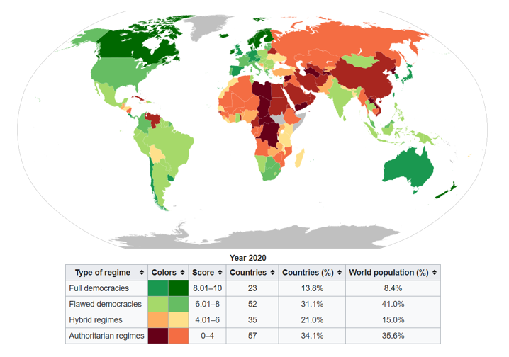
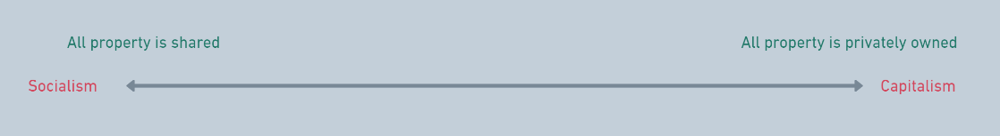
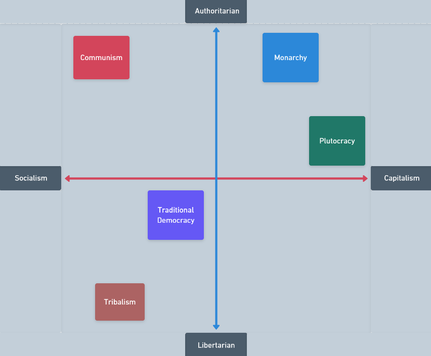

You may have heard of political terms like democracy, communism, dictatorships, left wing and right wing.
These are terms used to describe the primary ways in which decisions are made and resources are shared, but also how the primary decision makers come to be in that community.
A lot of these terms can have similar meanings. They can overlap with each other and they are also many variants within each one. This means that there can be infinite combination of political systems and positions you can take.
This can make it very confusing to understand, so let's visualise these different political systems throught two scales or spectrums, and try to understand the basic principles underlying them.
It's important to know that the systems on both spectrum each have their own pros and cons, and a community can theoretically prosper with any system. Over thousands of years however humans have to come to find that certain positions on the spectrum, or certain political systems are more likely to lead to a propering and fair society.
Before looking at examples of some of the political systems at various points on the spectrum, let's look at examples of decisions that we can make (or the government may make for us).
In an anarchy, any cooperation between individuals is done on a voluntary basis. There is no central authority telling individuals what to do. This system can be seen to exist in nature, and humans too lived in this format during prehistoric times for thousands of years as tribal hunter-gatherers. Though it is very possible for an anarchy to be harmonious, particularly in small groups, it is highly dependent on the voluntary co-operation of individuals. It is likely for hierarchies to emerge as those who are lucky enough to be physically stronger or have access to more natural resources around them, exert their influence onto others. Proponents of complete anarchy believe that humans are naturally cooperative and don't need a central authority to tell them what to do, while others would argue that history has demonstrated otherwise and that some people will gladly oppress others for their own benefit without a centralised authority to take some control.
The terms autocracies and oligarchies are often used interchangeably and they are very similar to each other. Technically an autocracy is rule by one individual, while an oligarchy is rule by a few inviduals. These systems can be further divided based on how these individuals or small groups came to power:
Democracy, from Greek, means 'rule by the people', and is widely considered to the fairest political system. The first recorded democracy was the city-state of Athens around 500 BCE, where citizens where randomly selected to fill government positions, and all citizens could speak and vote to make decisions in public gatherings. Though the term citizen then was closely tied to those who were obligated to fight in war, and therefore excluded women, slaves and foreigners. This form of democracy where everyone participates in all decisions is called a direct democracy and is only really possible in small communities. The prominent political system today is the representative democracy, where people vote to choose the people who they feel most accurately represent their own views, to make decisions in government. These people are often associated with a party, which is just a group of people who hold similar views. Not everyone in a democracy had their voice heard straightaway. Initially the government of the United Kingdom was only elected by male property owners, which was just 3% of the population in 1780. Suffrage means the right to vote in political elections, and the degree of universal suffrage (the right to vote without resriction due to gender, race, social status, education or wealth) is strongly correlated with the degree of democracy in a country. The journey to universal suffrage in every democracy has been a fiercel contested struggle with numerous revolutions, protests and violence. In 1893, New Zealand was the only country in the world with universal suffrage, while now 75 countries are considered to be democracies, with most having universal suffrage. Though a country may technically be a democracy, i.e., it has elections to assign leaders, it's level of democracy, that is it's level of 'rule by the people' can differ greatly. For example, fewer significant parties, suppression of opposing parties, low levels of participation and corruption of government officials all decrease the level of democracy of country. The Economist Intelligence Group's Democracy Index is a way to objectively measure the level of democracy.
Note: The names of parties and even of countries do not necessarily reflect on their political stance. For example, North Korea's offician name is the 'Democratic People's Republic of Korea', while it ranks last in the Democracy Index.
The economic system of a country can be much more fluid than it's systems of power, so rather than look at individual countries or individual systems, let's look at the ideologies on either end of the scale and some examples of policies utilising these ideologies.
Socialism is the ideology that there should be social ownership of property. As we saw in the first section, there can be many different kinds of 'property'. In democracies, one way in which socialism takes places is in the form of income redistribution to fund public services. Wealthier individuals pay a greater proportion of their income than people who aren't as well as off, in the form of taxes. These taxes then go on to fund public services that everyone has access to, such as transport, healthcare and education. One reasoning behind this is not everyone is born with the same privileges and opportunities, and therefore redistribution is required so no-one deprived of what is considered to be their basic rights and freedoms. Meanwhile Capitalism argues that this redistribution of income violates the most important right of all, that of personal freedom or liberty, and that society is primarily meritocratic, which means that privilege and power is gained by those on the basis of talent and effort.
An important type of property that is at the centre of the socialism versus capitalism debate, is the means of production. This includes raw materials, factories and infrastructure, through which products can be made and services can be provided. Proponents of capitalism argue that private ownership of the means of productions, creates innovation and economic growth, as different groups of people compete to create better products or provide better services utilising the means of production. This resulting improvement in the economy then benefits the whole population. A socialist criticism to this would be that this system prioritises profit over social good, and that demand for a product is not reflective of it's social value. They would say, for example that it's unfair that celebrities and athletes receive disproportionately high incomes, compared to say doctors or firefighters.
Socialists might also argue that excessive private ownership creates a small capitalist class, who owns the means of production and who can then easily exploit the working class whose only real 'property ownership' is their own ability to labour. Capitalists would say that a class system is inevitable as different people desire different things and you shouldn't infringe on an individuals freedom to purchase, own or exchange property.
Note: Economic systems and power structures have existed for a long time, but human rights as the freedoms that no policy can infringe has started to develop and expand only relatively recently in human history. For example, up until the early 1800s, slavery was common throughout the world, i.e., the ownership of people themselves as property, who are then employed in forced labour and forbidden to quit.
Socialist and capitalist policies can exist anywhere on the power spectrum, making it possible to create a four axis graph, which gives a general idea as to a policy's, person's, party's or country's political stance
Note: In a democracy, that there can be parties holding very different views, which is known as pluralism and is an important part of democracy. The above position in the graph of a democracy is primarily in comparison, or relative to the other political systems on the graph.
Political Ideologies can be
The systems we have just discussed can also be thought of as ideologies. Let's look at some more common ones:
Communism - A highly authoritarian form of socialism. This means that for example, rather than just redistribution of income, all property is either owned communaly or owned by the state, most wages are set by the state and strictly controlled. It is also often accompanied by reduced freedom of expression and suppression of views contradictory to the ruling group.
Feminism - Focusing on creating equality between genders; for example in suffrage, pay and education. Also improving reproductive rights and increasing legal protection from domestic violence and sexual harassment.
Nationalism - Promoting the interests and independence of the home nation
Fascism - Dictatorships with an an extreme form of nationalism, characterized by strict social heirarchies and use of force to suppress opposition. It's used interchangeably with Nazism.
Imperialism - The policy of extending a country's power beyond it's own border, which can be done through colonization, using military force or creating debt
Environmentalism - Focus on more policies being required to preserve, restore and improve the environment.
Conservatism - While the actual principles may vary depending on the country, the general belief is that tradition values and culture must be respected and social change must be slow and incremental